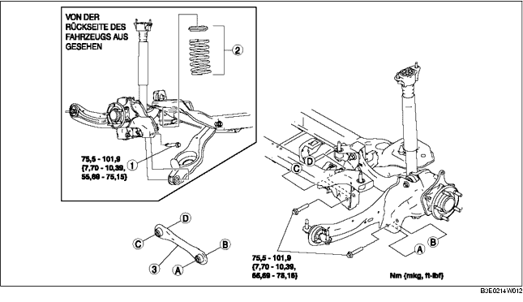

1. Den hinteren Sensor des automatischen Leuchtweitenreglers ausbauen. (Siehe SENSOR FÜR AUTOMATISCHE LEUCHTWEITENREGELUNG AUSBAUEN/EINBAUEN.)
2. Den Hinterachsstabilisator abmontieren. (Siehe HINTEREN STABILISATOR AUSBAUEN/EINBAUEN.)
3. Gemäß der Reihenfolge in der Tabelle ausbauen.
4. Der Einbau erfolgt in umgekehrter Reihenfolge.
5. Die Achsgeometrie prüfen und ggf. einstellen.
(Siehe HINTERACHSGEOMETRIE.)

.
1. Den unteren Hinterrad-Querlenker mit einem Wagenheber unterstützen.
2. Innere Schraube des unteren Hinterrad-Querlenker lösen.
3. Die äußere Schraube des unteren Hinterrad-Querlenkers ausbauen.
1. Den hinteren Querlenker so einbauen, dass die Rippe zur Vorderseite des Fahrzeugs gerichtet ist.